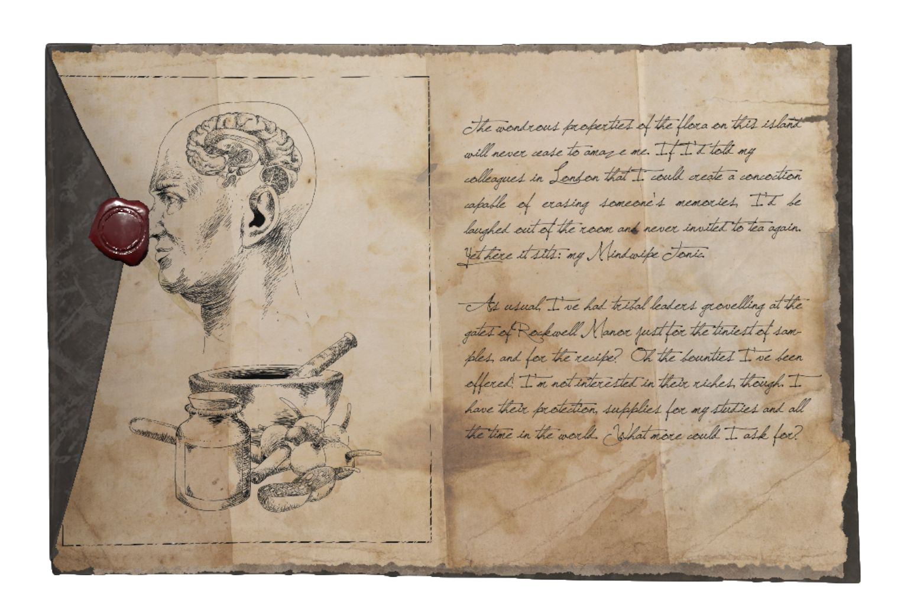
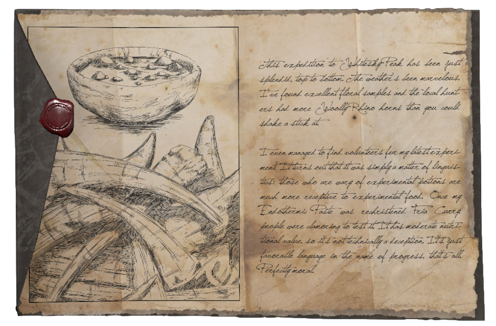
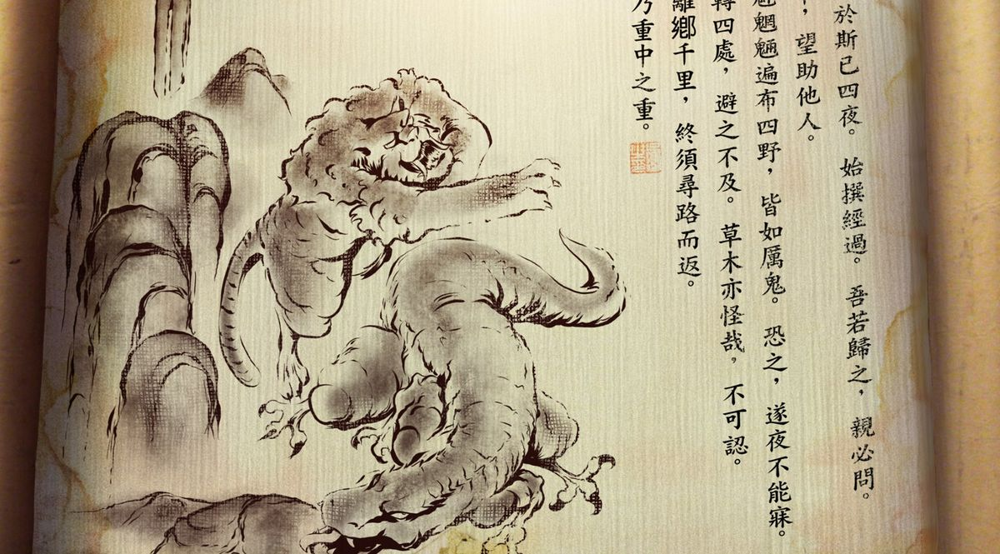
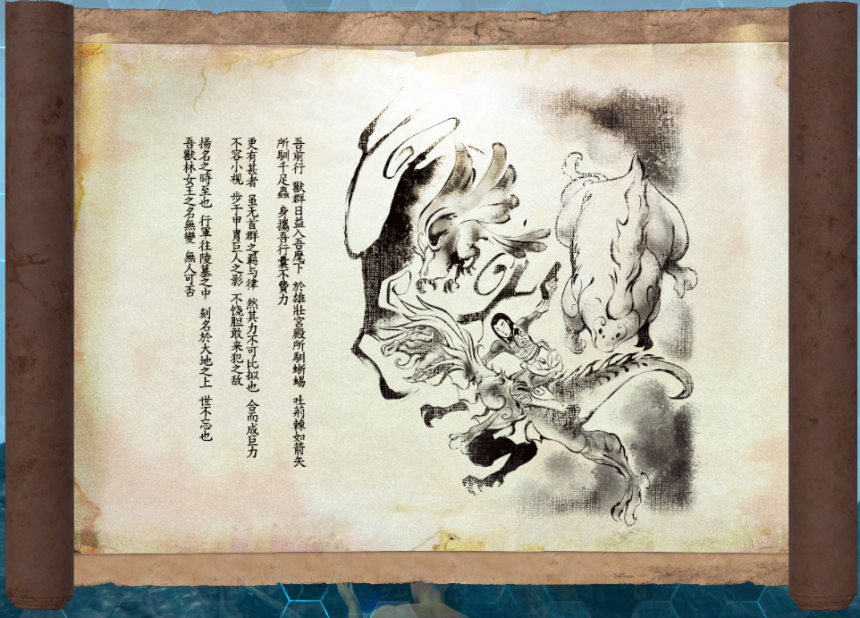
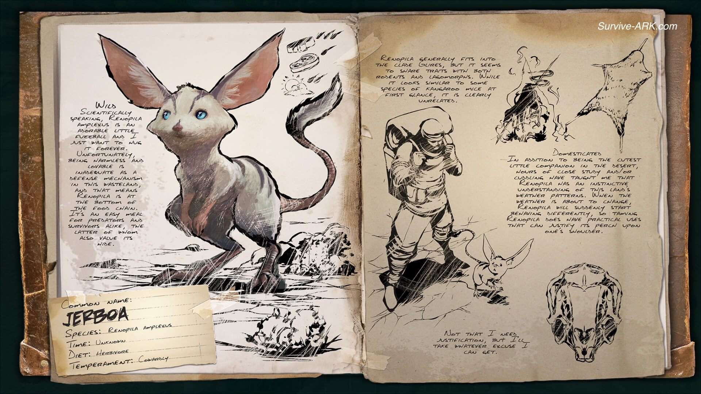
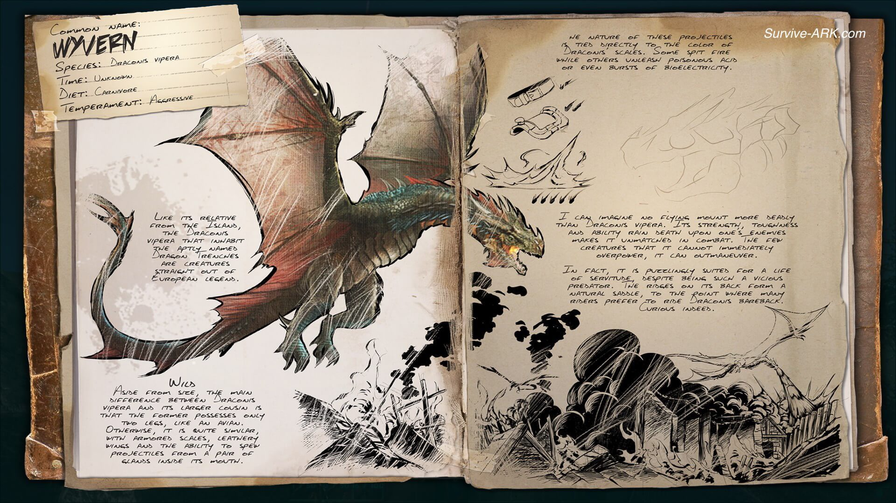
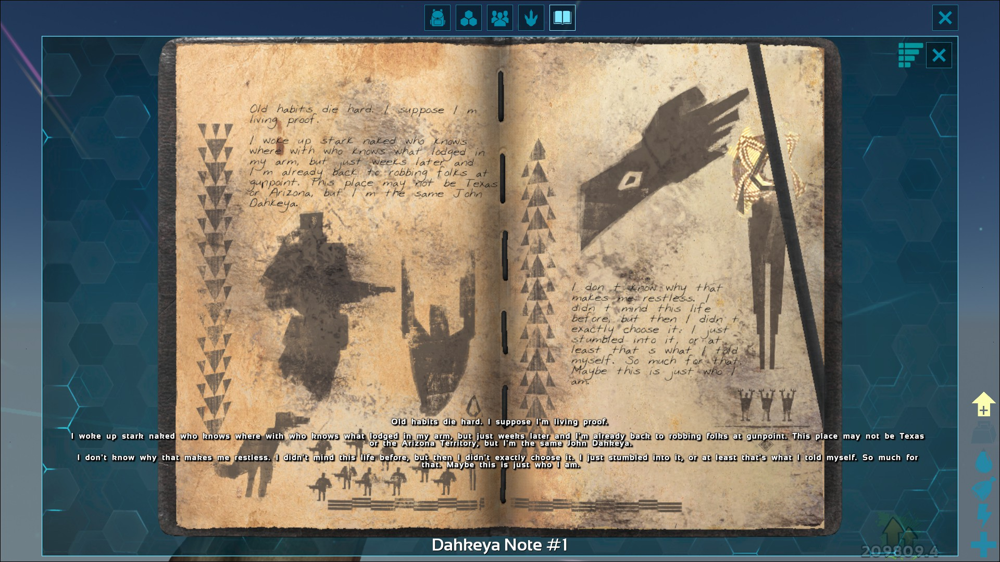
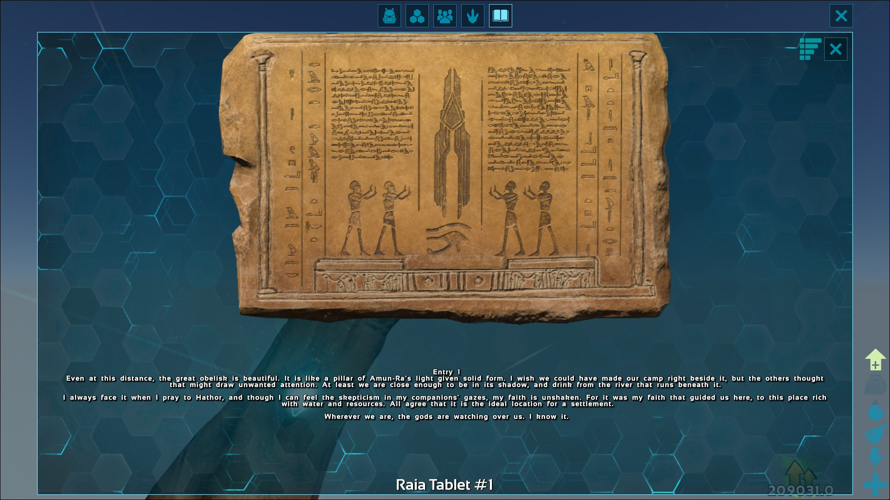

Home
|
Next
Inicio
Parte 1: El Comienzo de una Odisea

Parte 2: La Guerra y sus Consecuencias

Parte 3: El Descubrimiento de los Arcas

Parte 4: Los Supervivientes y sus Relatos

Parte 5: Los Enigmas de la Aberración

Parte 6: El Engaño de Rockwell

Parte 7: El Ascenso y la Caída de los Héroes

Parte 8: El Regreso a Casa y el Futuro de la Tierra
